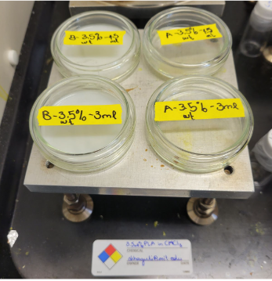
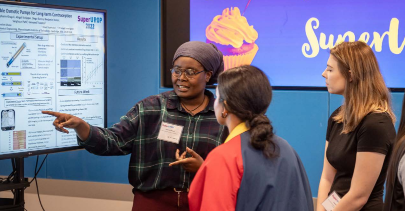

Bioresorbable Long term Contraception
Effective family planning is a key social issue and need, particularly for the Sub-Saharan African communities targeted by this research endeavor. While contraceptive implants are widely regarded as the most effective reversible option, offering high drug adherence and promise of long-term contraception, current commercial implants suffer from the pitfalls of inconsistent drug release rates, long pharmacokinetic tails that delay the user’s return to fertility, and their need for surgical methods for removal.
As a research assistant with the Traverso Lab, housed in MIT’s Koch Institute. I worked on developing an osmotic mechanism for consistent contraceptive drug release, housed in an implant that would ultimately be broken down and absorbed by the body. Therefore mitigating the shortfalls of current implants, and making it a suitable alternative for community members for whom access to medical services is difficult.
Key Skills : Independent research and experimentation, wet lab skills, solvent casted membranes, thin membrane research, porometry permeability tests, scanning electronmicroscopy
My main duties centered around the fabrication of a semi permeable and bio-resorbable polymer membrane through solvent casting, varying parameters of the fabrication recipe.
I would then characterize the resulting membranes by;
- observing their thickness and surface characteristics using a scanning electron microscope.
- conducting permeability tests using a gas and liquid porometer.
- using porometry setups to tabulating mass and volumetric flow rates at given pressures in order to calculate permeability constants for samples
- observing osmosis rates across the membranes in vitro in simulated cell tissue fluid environments in the lab.
- comparing the performance of fabricated membranes against commercially available but non-bioresorbable membranes
After receiving training and supervision in these steps, I went on to work independently, conducting experiments and reporting results in weekly update meetings. Ultimately, I presented some of my research findings at an undergraduate research expo on the MIT campus.
Sample Lab images
Scanning Electron Microscope images of surface morphology and thickness of solvent-cast membrane
Porometry setups